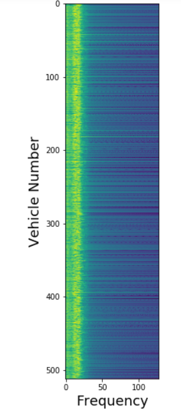
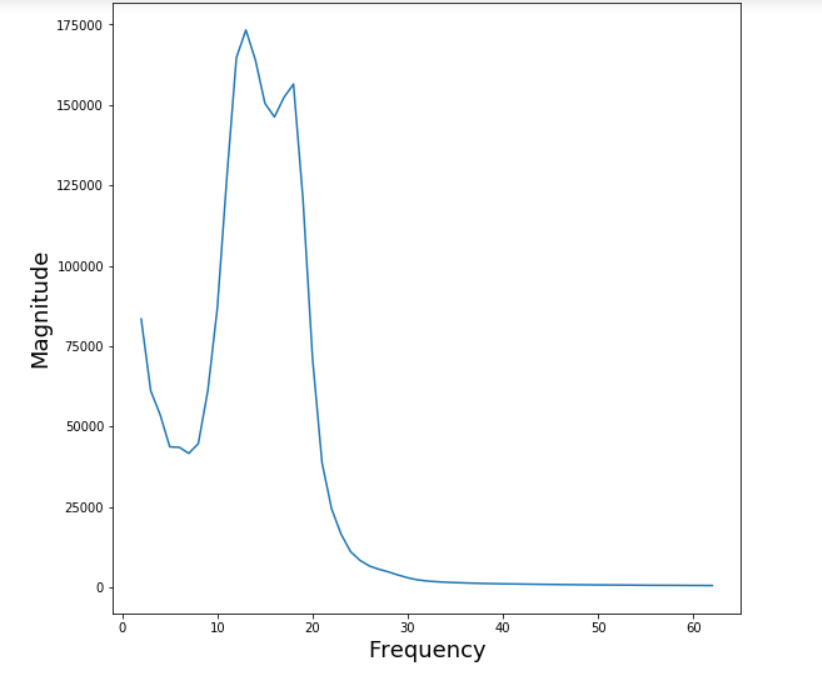

Signal Processing
Signal processing techniques are used both in the embedded system and at the server to improve signal quality and so make vehicle estimation more robust and accurate. These algorithms act on several phenomena that affect the strain signal: diurnal variations in the bridge’s dynamic response, bridge harmonics and of course background noise. We are constantly developing and improving our algorithms.
Bridge Harmonics
As a vehicle crosses a bridge, its impact causes the bridge to oscillate. The frequency and amplitude is determined patly by the vehicle’s suspension, but largely by the characteristics of the bridge. In most bridges this oscillation is relatively small compared to the deflection of the bridge caused by the vehicle’s loading. However, for some bridges the oscillation is sufficiently powerful to affect the strain signal, superimposing a sinusoidal signal onto the desired signal. Left untreated this introduces spurious peaks in the signal that could result in errors in speed estimation and even axle location.
 The task of the algorithm is to attenuate this harmonic component while leaving the desired unaffected. This is simplified by the fact that the bridge harmonics are usually very pure sinusoids. With this knowledge it is relatively easy to identify and remove the harmonic, Figure Blockdiagram. We used a Gabor filter due to its good temporal and spectral localisation.

Tracking Changes in the Bridge
This simple approach is highly effective in attenuating the harmonics—providing we know the frequency of the harmonic. The task becomes more difficult if the bridge’s frequency response changes. For instance, over the course of the day temperature variations will change the stiffness of the bridge—causeing a shift in the frequency of the bridge harmonics. We are now developing algorithms based on a Kalman filter to track these frequency shifts and adapt to changes in the bridge’s characteristics.
Of course, changes in the stiffness of the bridge also affect how much astrain given load will induce. Although a small effect, it is nonethless significant for high accuracy measurements. We are working on methods that use internal temperature measurements of the bridge, changes in the dynamic response of the bridge and novel calibration methods to account for this effect and improve the accuracy and precision of out iBWIM.
Dealing with Noise
As with any measurement we must account for noise. With our high bit resolution quantisation error is negligable, and with on-board amplification on the sensor, and relatively short connections to the embedded system, there is little evidence of either white or shot noise.